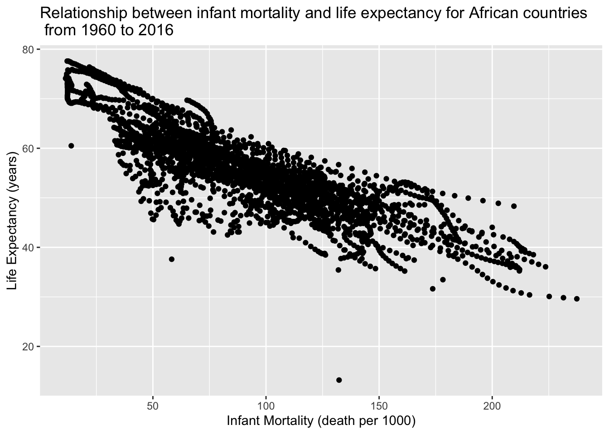
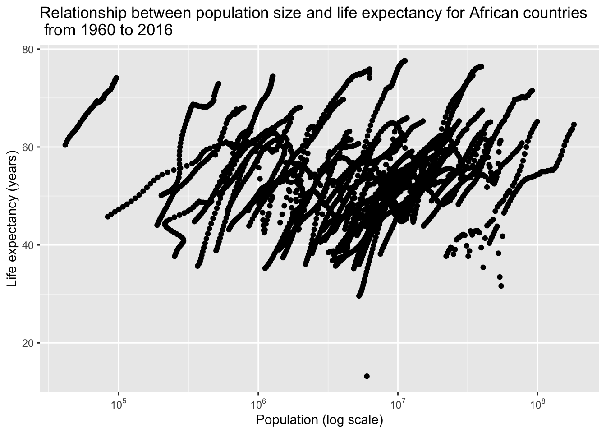
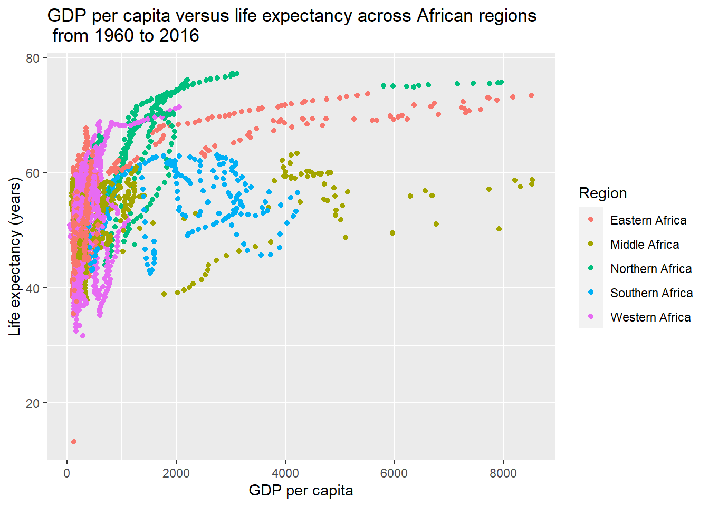

R coding Exercise Gapminder, Tidyverse, and Plotting
First, we need to make sure all needed packages for the exercise are loaded using the command library(what we want to load), if not loaded (or you encounter an error of ‘x’ not found)- please install using the command install.packages(what you want to install)
For example, if dslabs is not installed you would use the command…install.packages(“dslabs”)
PREPARATION
Loads dslabs package
## Warning: package 'dslabs' was built under R version 4.0.5Loads tidyverse (a collection of packages designed to help with cleaning data)
## -- Attaching packages --------------------------------------- tidyverse 1.3.0 --## v ggplot2 3.3.3 v purrr 0.3.4
## v tibble 3.0.6 v dplyr 1.0.7
## v tidyr 1.1.2 v stringr 1.4.0
## v readr 1.4.0 v forcats 0.5.0## Warning: package 'dplyr' was built under R version 4.0.5## -- Conflicts ------------------------------------------ tidyverse_conflicts() --
## x dplyr::filter() masks stats::filter()
## x dplyr::lag() masks stats::lag()Loads scales package (to access break formatting functions)
##
## Attaching package: 'scales'## The following object is masked from 'package:purrr':
##
## discard## The following object is masked from 'package:readr':
##
## col_factorLoads hrbrthemes package (it provides additional themes, scales and components to make ggplot look nicer)
## Warning: package 'hrbrthemes' was built under R version 4.0.5## NOTE: Either Arial Narrow or Roboto Condensed fonts are required to use these themes.## Please use hrbrthemes::import_roboto_condensed() to install Roboto Condensed and## if Arial Narrow is not on your system, please see https://bit.ly/arialnarrowLoads viridis package (to access a wide range of color map that improves the graph presentation and readability)
## Warning: package 'viridis' was built under R version 4.0.5## Loading required package: viridisLite## Warning: package 'viridisLite' was built under R version 4.0.5##
## Attaching package: 'viridis'## The following object is masked from 'package:scales':
##
## viridis_palLoads broom package (to convert output object from lm to a table)
## Warning: package 'broom' was built under R version 4.0.5Loads kableExtra package (we will need this package to create nice html table)
##
## Attaching package: 'kableExtra'## The following object is masked from 'package:dplyr':
##
## group_rowsLooks at help file for the gapminder data
## starting httpd help server ... doneGet an overview of the data structure
## 'data.frame': 10545 obs. of 9 variables:
## $ country : Factor w/ 185 levels "Albania","Algeria",..: 1 2 3 4 5 6 7 8 9 10 ...
## $ year : int 1960 1960 1960 1960 1960 1960 1960 1960 1960 1960 ...
## $ infant_mortality: num 115.4 148.2 208 NA 59.9 ...
## $ life_expectancy : num 62.9 47.5 36 63 65.4 ...
## $ fertility : num 6.19 7.65 7.32 4.43 3.11 4.55 4.82 3.45 2.7 5.57 ...
## $ population : num 1636054 11124892 5270844 54681 20619075 ...
## $ gdp : num NA 1.38e+10 NA NA 1.08e+11 ...
## $ continent : Factor w/ 5 levels "Africa","Americas",..: 4 1 1 2 2 3 2 5 4 3 ...
## $ region : Factor w/ 22 levels "Australia and New Zealand",..: 19 11 10 2 15 21 2 1 22 21 ...Get a summary of the data
## country year infant_mortality life_expectancy
## Albania : 57 Min. :1960 Min. : 1.50 Min. :13.20
## Algeria : 57 1st Qu.:1974 1st Qu.: 16.00 1st Qu.:57.50
## Angola : 57 Median :1988 Median : 41.50 Median :67.54
## Antigua and Barbuda: 57 Mean :1988 Mean : 55.31 Mean :64.81
## Argentina : 57 3rd Qu.:2002 3rd Qu.: 85.10 3rd Qu.:73.00
## Armenia : 57 Max. :2016 Max. :276.90 Max. :83.90
## (Other) :10203 NA's :1453
## fertility population gdp continent
## Min. :0.840 Min. :3.124e+04 Min. :4.040e+07 Africa :2907
## 1st Qu.:2.200 1st Qu.:1.333e+06 1st Qu.:1.846e+09 Americas:2052
## Median :3.750 Median :5.009e+06 Median :7.794e+09 Asia :2679
## Mean :4.084 Mean :2.701e+07 Mean :1.480e+11 Europe :2223
## 3rd Qu.:6.000 3rd Qu.:1.523e+07 3rd Qu.:5.540e+10 Oceania : 684
## Max. :9.220 Max. :1.376e+09 Max. :1.174e+13
## NA's :187 NA's :185 NA's :2972
## region
## Western Asia :1026
## Eastern Africa : 912
## Western Africa : 912
## Caribbean : 741
## South America : 684
## Southern Europe: 684
## (Other) :5586Determines the type of object gapminder is
## [1] "data.frame"PART 1
Filtering Data and creating New Variables
We want to examine the data about African countries only, as a result, we will filter the data accordingly…
Filter out data from all African countries (variable from continent= ‘Africa’) by using filter command, also use pipeline %<% to create standardized chain of commands (This will allow for easier processing aka “do this then that” )
Note that the first part of this code (africadata<-gapminder) is needed due to the fact that we are assigning the African countries to a completely new object (africadata) for ease of analysis
Creates new object and assigns all African countries to it
Next we will recheck the structure and summary of the new data
Note that since we are using the new object (africadata) we are no longer focusing the commands on gapminder
Checks the structure and shows summary of the newly created object (africadata)
## 'data.frame': 2907 obs. of 9 variables:
## $ country : Factor w/ 185 levels "Albania","Algeria",..: 2 3 18 22 26 27 29 31 32 33 ...
## $ year : int 1960 1960 1960 1960 1960 1960 1960 1960 1960 1960 ...
## $ infant_mortality: num 148 208 187 116 161 ...
## $ life_expectancy : num 47.5 36 38.3 50.3 35.2 ...
## $ fertility : num 7.65 7.32 6.28 6.62 6.29 6.95 5.65 6.89 5.84 6.25 ...
## $ population : num 11124892 5270844 2431620 524029 4829291 ...
## $ gdp : num 1.38e+10 NA 6.22e+08 1.24e+08 5.97e+08 ...
## $ continent : Factor w/ 5 levels "Africa","Americas",..: 1 1 1 1 1 1 1 1 1 1 ...
## $ region : Factor w/ 22 levels "Australia and New Zealand",..: 11 10 20 17 20 5 10 20 10 10 ...## country year infant_mortality life_expectancy
## Algeria : 57 Min. :1960 Min. : 11.40 Min. :13.20
## Angola : 57 1st Qu.:1974 1st Qu.: 62.20 1st Qu.:48.23
## Benin : 57 Median :1988 Median : 93.40 Median :53.98
## Botswana : 57 Mean :1988 Mean : 95.12 Mean :54.38
## Burkina Faso: 57 3rd Qu.:2002 3rd Qu.:124.70 3rd Qu.:60.10
## Burundi : 57 Max. :2016 Max. :237.40 Max. :77.60
## (Other) :2565 NA's :226
## fertility population gdp continent
## Min. :1.500 Min. : 41538 Min. :4.659e+07 Africa :2907
## 1st Qu.:5.160 1st Qu.: 1605232 1st Qu.:8.373e+08 Americas: 0
## Median :6.160 Median : 5570982 Median :2.448e+09 Asia : 0
## Mean :5.851 Mean : 12235961 Mean :9.346e+09 Europe : 0
## 3rd Qu.:6.860 3rd Qu.: 13888152 3rd Qu.:6.552e+09 Oceania : 0
## Max. :8.450 Max. :182201962 Max. :1.935e+11
## NA's :51 NA's :51 NA's :637
## region
## Eastern Africa :912
## Western Africa :912
## Middle Africa :456
## Northern Africa :342
## Southern Africa :285
## Australia and New Zealand: 0
## (Other) : 0Now that we have created a new object (africadata) and assigned all of the desired countries to it, we need to create new variables to help us analyze the data, in this example we will use the variables infant_mortality and Life_expectancy (which will be called INFMORT.LIFEEXP (variable 1)) and population and life_expectancy (which will be called POP.LIFEEXP (variable 2)).
Note that we will use a similar command structure as when we assigned the gapminder data African countries to the new object africadata, only this time africadata will be replaced with our new desired objects (Variables 1 and 2 respectively)
Please note that we also use the ‘select’ function as a way to choose which subset of variables we want to measure
We do not have to use the pipe function (%>%) since we are not doing several things at once (assigning and filtering in the previous case of africadata)
Create another object (V1) in the africadata (object) with only infant mortality and life expectancy data
Create another object (V2) in the africadata (object) with only population and life expectancy data
We will now check the structure and summary of the two new objects we have created:
## 'data.frame': 2907 obs. of 2 variables:
## $ infant_mortality: num 148 208 187 116 161 ...
## $ life_expectancy : num 47.5 36 38.3 50.3 35.2 ...## infant_mortality life_expectancy
## Min. : 11.40 Min. :13.20
## 1st Qu.: 62.20 1st Qu.:48.23
## Median : 93.40 Median :53.98
## Mean : 95.12 Mean :54.38
## 3rd Qu.:124.70 3rd Qu.:60.10
## Max. :237.40 Max. :77.60
## NA's :226## 'data.frame': 2907 obs. of 2 variables:
## $ population : num 11124892 5270844 2431620 524029 4829291 ...
## $ life_expectancy: num 47.5 36 38.3 50.3 35.2 ...## population life_expectancy
## Min. : 41538 Min. :13.20
## 1st Qu.: 1605232 1st Qu.:48.23
## Median : 5570982 Median :53.98
## Mean : 12235961 Mean :54.38
## 3rd Qu.: 13888152 3rd Qu.:60.10
## Max. :182201962 Max. :77.60
## NA's :51PART 2
Plotting
For this section we will plot the new variables created- life expectancy as a function of infant mortality and as a function of population size. We will make two separate plots to compare this.
Note that since we are trying to create scatter plots (which means multiple commands) we will reuse the pipe function of %>%, making sure to use our new objects
To create a scatter plot the command function ggplot(aes(x,y)) is used, with geom_point() being added to signal the creation of a line (x and y lab simply label the x and y axis respectively)
First Scatterplot of life expectancy as a function of infant mortality
INFMORT.LIFEEXP %>%
ggplot(aes(x=infant_mortality, y=life_expectancy)) +
geom_point() +
#add plot title
ggtitle("Relationship between infant mortality and life expectancy for African countries\n from 1960 to 2016") +
#change x-axis label
xlab('Infant Mortality (death per 1000)') +
#change y-axis label
ylab('Life Expectancy (years)')## Warning: Removed 226 rows containing missing values (geom_point).
Second Scatterplot of life expectancy as a function of population
Note that here, the command scale_x_continous(trans = ‘log10’) is added along with the other commands. This is to set the x-axis to a log scale
POP.LIFEEXP %>%
ggplot(aes(x=population, y=life_expectancy))+
geom_point() +
#transform and reformat x-axis to log scale
scale_x_continuous(trans = 'log10',
labels = trans_format("log10", math_format(10^.x))) +
#add plot title
ggtitle("Relationship between population size and life expectancy for African countries\n from 1960 to 2016") +
#change x-axis label
xlab("Population (log scale)") +
#change y-axis label
ylab("Life expectancy (years)") ## Warning: Removed 51 rows containing missing values (geom_point).
Notice that right now, due to multiple observation years for each country being reported, the data is disorganized and has formed ‘streaks’. To fix this, we must now narrow our data to a particular year.
We need to determine which years have missing data first to find the best year(s) for analysis. We can do this by utilizing the select function (to select the variable (year) and the variable that we are using the function for(infant_mortality)) combined with the filter command and the function (is.na), which is used to determine missing variables (na stands for non-applicable).
#write code that figures out which years have missing data for infant mortality
africadata %>%
group_by(year) %>%
summarise(infant_mortality_na = sum(is.na(infant_mortality))) %>%
filter(infant_mortality_na > 0) %>%
arrange(-infant_mortality_na)## # A tibble: 23 x 2
## year infant_mortality_na
## <int> <int>
## 1 2016 51
## 2 1961 17
## 3 1962 16
## 4 1963 16
## 5 1964 15
## 6 1965 14
## 7 1966 13
## 8 1967 11
## 9 1968 11
## 10 1960 10
## # ... with 13 more rowsNow that we have determined that there are missing variables throughout the given years of the data set through 1981 and then again in 2016, we will go with thet year 2000 for the most accurate analysis.
Now we will extract only the year 2000 from the data
Now we will once again view the structure and summary to verify correct observations
## 'data.frame': 51 obs. of 9 variables:
## $ country : Factor w/ 185 levels "Albania","Algeria",..: 2 3 18 22 26 27 29 31 32 33 ...
## $ year : int 2000 2000 2000 2000 2000 2000 2000 2000 2000 2000 ...
## $ infant_mortality: num 33.9 128.3 89.3 52.4 96.2 ...
## $ life_expectancy : num 73.3 52.3 57.2 47.6 52.6 46.7 54.3 68.4 45.3 51.5 ...
## $ fertility : num 2.51 6.84 5.98 3.41 6.59 7.06 5.62 3.7 5.45 7.35 ...
## $ population : num 31183658 15058638 6949366 1736579 11607944 ...
## $ gdp : num 5.48e+10 9.13e+09 2.25e+09 5.63e+09 2.61e+09 ...
## $ continent : Factor w/ 5 levels "Africa","Americas",..: 1 1 1 1 1 1 1 1 1 1 ...
## $ region : Factor w/ 22 levels "Australia and New Zealand",..: 11 10 20 17 20 5 10 20 10 10 ...## country year infant_mortality life_expectancy
## Algeria : 1 Min. :2000 Min. : 12.30 Min. :37.60
## Angola : 1 1st Qu.:2000 1st Qu.: 60.80 1st Qu.:51.75
## Benin : 1 Median :2000 Median : 80.30 Median :54.30
## Botswana : 1 Mean :2000 Mean : 78.93 Mean :56.36
## Burkina Faso: 1 3rd Qu.:2000 3rd Qu.:103.30 3rd Qu.:60.00
## Burundi : 1 Max. :2000 Max. :143.30 Max. :75.00
## (Other) :45
## fertility population gdp continent
## Min. :1.990 Min. : 81154 Min. :2.019e+08 Africa :51
## 1st Qu.:4.150 1st Qu.: 2304687 1st Qu.:1.274e+09 Americas: 0
## Median :5.550 Median : 8799165 Median :3.238e+09 Asia : 0
## Mean :5.156 Mean : 15659800 Mean :1.155e+10 Europe : 0
## 3rd Qu.:5.960 3rd Qu.: 17391242 3rd Qu.:8.654e+09 Oceania : 0
## Max. :7.730 Max. :122876723 Max. :1.329e+11
##
## region
## Eastern Africa :16
## Western Africa :16
## Middle Africa : 8
## Northern Africa : 6
## Southern Africa : 5
## Australia and New Zealand: 0
## (Other) : 0Now that the data has been analyzed with only yeay 2000 being considered, we must now repeat the process done earlier to plot the newly separated data
Please note that since the new data is assigned the object name of africadata2000, the object names of INFMORT.LIFEEXP and POP.LIFEEXP from the first scatter plots are both replaced by africadata2000
First scatter plot with new data only for year 2000
africadata2000 %>%
ggplot(aes(x=infant_mortality, y=life_expectancy)) +
geom_point() +
#add plot title
ggtitle("Relationship between infant mortality and life expectancy for African countries\n from 1960 to 2016") +
#change x-axis label
xlab('Infant Mortality (death per 1000)') +
#change y-axis label
ylab('Life Expectancy (years)')Second scattter plot with new data only for year 2000
africadata2000 %>%
ggplot(aes(x=population, y=life_expectancy))+
geom_point() +
#transform and reformat x-axis to log scale
scale_x_continuous(trans = 'log10',
labels = trans_format("log10", math_format(10^.x))) +
#add plot title
ggtitle("Relationship between population size and life expectancy for African countries\n from 1960 to 2016") +
#change x-axis label
xlab("Population (log scale)") +
#change y-axis label
ylab("Life expectancy (years)") 
The new scatter plots seem to suggest a negative correlation between infant mortality and life expectancy (still), while there is no evident correlation between population size and life expectancy.
PART 3
Let’s try to create a few more plots using data across all years
We will create a boxplot with jitter to visualize the distribution of the life expectancy across different African regions.
africadata %>%
#use fill to set a unique color for each region
ggplot(aes(x=region, y=life_expectancy, fill=region)) +
#add boxplot
geom_boxplot() +
#set color theme
scale_fill_viridis(discrete = TRUE, alpha=0.6, option="D") +
#add jitter to plot
geom_jitter(color="black", size=0.4, alpha=0.9) +
#a clean and neat background to emphasize typography
theme_ipsum() +
#change title size and legend position
theme(
legend.position="none",
plot.title = element_text(size=15)
) +
#add plot title
ggtitle("Comparison of life expectancy across five African regions") +
#change x-axis label
xlab("") +
#change y-axis label
ylab("Life expectancy (years)") 
We can see that Northern Africa had the highest life expectancy but the data were also more spread out between countries. On the contrary, other four African regions had lower and similar life expectancy.
#calculate GDP per capita and create new variable
africadata <- africadata %>%
mutate(gdp_per_capita = gdp/population)
africadata %>%
#use color to set a unique color for each region
ggplot(aes(x=gdp_per_capita, y=life_expectancy, color=factor(region))) +
geom_point() +
#change legend title
guides(color=guide_legend(title="Region")) +
#add plot title
ggtitle("GDP per capita versus life expectancy across African regions\n from 1960 to 2016") +
#change x-axis label
xlab("GDP per capita") +
#change y-axis label
ylab("Life expectancy (years)")## Warning: Removed 637 rows containing missing values (geom_point).
The graph demonstrated a positive correlation between GDP per capita and life expectancy across all African regions. One more thing we noticed is that the rise in life expectancy by the unit change in GDP was higher among Northern and Eastern regions, however, the the similar trend was less apparent among other regions such as Middle or Southern Africa.
PART 4
The last step we will need to do is to utilize linear regression models on both life expectancy and infant mortality, and life expectancy and population separately, to determine a possible link, if any.
To do this, we first establish the object names that we want to save the models to, which in this example will be ‘fit1’ and ‘fit2’. Next, we utilize the lm function with the x-axis variable going second (infant mortality and population respectively). Finally, we utilize the summary function to gain an understanding of the models computations.
fit1 <- lm(life_expectancy ~ infant_mortality, data = africadata2000)
fit2 <- lm(life_expectancy ~ population, data = africadata2000)Summarize
##
## Call:
## lm(formula = life_expectancy ~ infant_mortality, data = africadata2000)
##
## Residuals:
## Min 1Q Median 3Q Max
## -22.6651 -3.7087 0.9914 4.0408 8.6817
##
## Coefficients:
## Estimate Std. Error t value Pr(>|t|)
## (Intercept) 71.29331 2.42611 29.386 < 2e-16 ***
## infant_mortality -0.18916 0.02869 -6.594 2.83e-08 ***
## ---
## Signif. codes: 0 '***' 0.001 '**' 0.01 '*' 0.05 '.' 0.1 ' ' 1
##
## Residual standard error: 6.221 on 49 degrees of freedom
## Multiple R-squared: 0.4701, Adjusted R-squared: 0.4593
## F-statistic: 43.48 on 1 and 49 DF, p-value: 2.826e-08##
## Call:
## lm(formula = life_expectancy ~ population, data = africadata2000)
##
## Residuals:
## Min 1Q Median 3Q Max
## -18.429 -4.602 -2.568 3.800 18.802
##
## Coefficients:
## Estimate Std. Error t value Pr(>|t|)
## (Intercept) 5.593e+01 1.468e+00 38.097 <2e-16 ***
## population 2.756e-08 5.459e-08 0.505 0.616
## ---
## Signif. codes: 0 '***' 0.001 '**' 0.01 '*' 0.05 '.' 0.1 ' ' 1
##
## Residual standard error: 8.524 on 49 degrees of freedom
## Multiple R-squared: 0.005176, Adjusted R-squared: -0.01513
## F-statistic: 0.2549 on 1 and 49 DF, p-value: 0.6159Because of the final p-value of 2.826e-08 for the first model, which is less than 0.001, I can conclude that there exists a negative correlation between infant mortality and life expectancy, that is to say that for every unit of increase of infant mortality, life expectancy is predicted to decrease.
In the second model determining if there exists a link between population and life expectancy the p-value is greater than 0.005 at 0.6159, which indicates that there is no statistically significant link between population size and life expectancy.
Now, we will fit a multiple linear regression models that used life expectancy as outcome and both infant mortality and GDP per capita as independent variables, to evaluate the strength of the relationship and output the statistics result in a table.
#fit a multiple linear model to regress life expectancy on infant mortality and GDP per capita using full data
fit3 <- lm(life_expectancy ~ infant_mortality + gdp_per_capita , data = africadata)
#summarize the lm output
summary(fit3)##
## Call:
## lm(formula = life_expectancy ~ infant_mortality + gdp_per_capita,
## data = africadata)
##
## Residuals:
## Min 1Q Median 3Q Max
## -35.344 -2.438 0.369 2.745 11.655
##
## Coefficients:
## Estimate Std. Error t value Pr(>|t|)
## (Intercept) 69.1118612 0.3282424 210.55 < 2e-16 ***
## infant_mortality -0.1560137 0.0027499 -56.73 < 2e-16 ***
## gdp_per_capita 0.0005499 0.0000909 6.05 1.7e-09 ***
## ---
## Signif. codes: 0 '***' 0.001 '**' 0.01 '*' 0.05 '.' 0.1 ' ' 1
##
## Residual standard error: 4.644 on 2200 degrees of freedom
## (704 observations deleted due to missingness)
## Multiple R-squared: 0.6896, Adjusted R-squared: 0.6893
## F-statistic: 2444 on 2 and 2200 DF, p-value: < 2.2e-16#use tidy to convert lm object to tibble
fit3 %>%
tidy() %>%
#round figures to show only 5 decimal places
mutate_if(is.numeric, round, 5) %>%
#create awesom HTML table
kbl() %>%
kable_paper("hover", full_width = F)| term | estimate | std.error | statistic | p.value |
|---|---|---|---|---|
| (Intercept) | 69.11186 | 0.32824 | 210.55132 | 0 |
| infant_mortality | -0.15601 | 0.00275 | -56.73388 | 0 |
| gdp_per_capita | 0.00055 | 0.00009 | 6.04957 | 0 |
The significant p-value (p<0.0001) for infant mortality indicated a linear relationship between infant mortality and life expectancy after adjusting for GDP per capita, and the coefficient showed that the life expectancy goes down by 0.16 for every 1 unit increase in infant mortality. Similarly, we also found a linear relationship between GDP per capita and life expectancy after adjusting for infant mortality with a p-value smaller than 0.05.